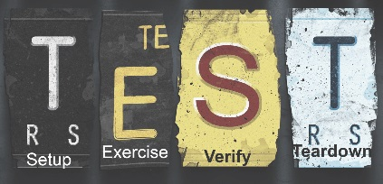

Test Driven Development (TDD)

We will introduce the concept of TDD, Unit Testing and the JUnit Framework.
JUnit and DVD.java

We will demonstrate how to use the JUnit Framework to test DVD.java.
JUnit Terminology
Having tested DVD.java using the JUnit Framework, we will now cover the terminology used in this process (assertions, annotations and fixtures).
Planning Testing

Here we will cover the Four Phase Test and present a more complicated JUnit test.
Completing DVD app testing

Here we will review the DVDTest.java class and develop JUnit tests for more classes in the DVD app.
Assignment 2

The specification for Assignment 2 (worth 55% of your grade for this semester). More to follow.
Test Class
For use with Assignment 2
Testing Resources
These are the resources for the Testing section (TDD) of the course.
Lab-09

On completion of this lab you should be able to: